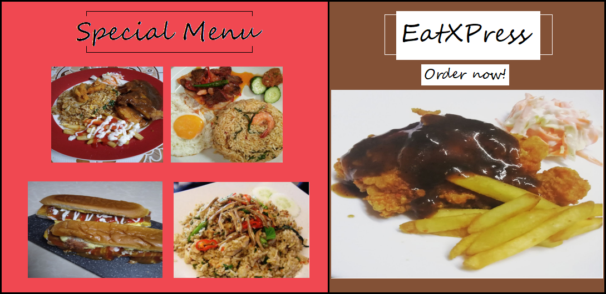

|

|
| Our Menu |
Drinks |
Lunch/Dinner |
Desserts |
| Oren |
Sup Daging |
Kuih Lapis |
| Sirap |
Daging Goreng Kunyit |
Kuih Koci |
| Teh O |
Ayam Goreng Kunyit |
Kek Batik |
| Milo |
Nasi Goreng Daging |
Tepung Talam Suji |
| Coffee |
Nasi Goreng Ayam |
Bomboloni |
|
Nasi Goreng Kampung |
|
|
Nasi Goreng Pataya |
|
|
Nasi Goreng Cili Padi |
|
|
Nasi Goreng USA |
|
|
Nasi Goreng Bujang |
|
|
Koey Teow Goreng |
|
|
Mee Goreng |
|
|
Bihun Goreng |
|
|
Nasi Goreng Chicken Chop |
|
|
Chicken Chop |
|
|
Burger Ayam |
|
|
Burger Daging |
|
|
Burger Zinger |
|
|
Mini Roti John Ayam |
|
|
Mini Roti John Daging |
|
Food Delivery Methods
Our food stall does not provide tables or chairs for our customers because we want to avoid the dangerous Covid-19 viruses. Therefore, We can deliver the foods to our customers and we already have our own runners to do so. Other than that, our customers also can pick up their foods at our stall and go back to their home. During this Covid-19 era, our team feels the responsibility to provide foods at our customers and at the same time ensuring their health safety.
Foods Prices
During this Covid-19 we already know that the Malaysian economy are facing problems lately. Many of Malaysian people are effected by the Covid-19 and lost their job. Therefore, we provide our foods at a economic price for our customers. We also provide budget menu for our customers and most of our foods are at the reasonable and affordable prices. Other than that, our stall also provide delicious, healthy and energizing foods to our customers. On the other hand, we also make some promotion on the special days such as Malaysia Independence Day, Eid Mubarak and other Malaysian celebration. Thereore, feel free to buy foods with us because we guaranteed that our foods and drinks can make you definitely satisfied :)
Our Menu